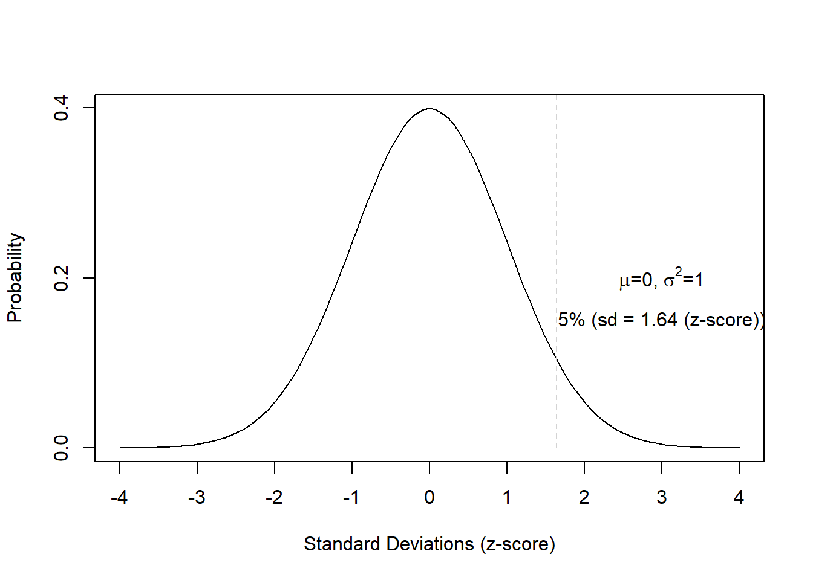
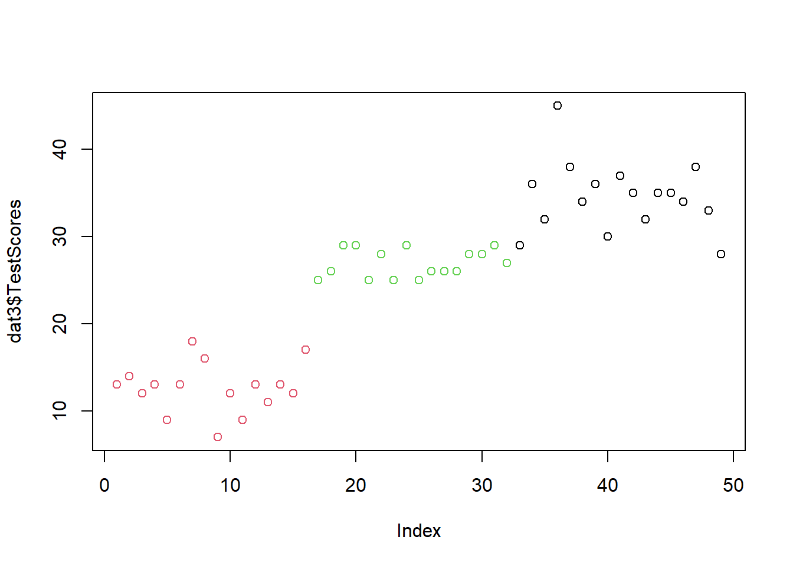

Week 4 Getting Started with R and RStudio
This tutorial shows how to get started with R and it specifically focuses on R for analyzing language data but it offers valuable information for anyone who wants to get started with R. As such, this tutorial is aimed at fresh users or beginners with the aim of showcasing how to set up a R session in RStudio, how to set up R projects, and how to do basic operations using R. The aim is not to provide a fully-fledged from beginner-to-expert, all-you-need-to-know tutorial but rather to show how to properly and tidily set up a project before you start coding and exemplify common operations such as loading and manipulation tabular data and generating basic visualization using R.
If you already have experience with R, both Wickham and Grolemund (2016) (see here) and Gillespie and Lovelace (2016) (see here) are highly recommendable and excellent resources for improving your coding abilities and workflows in R.
4.1 Goals of this section
The goals of this section are:
- How to get started with R
- How to orient yourself to R and RStudio
- How to create and work in R projects
- How to know where to look for help and to learn more about R
- Understand the basics of working with data: load data, save data, working with tables, create a simple plot
- Learn some best practices for using R scripts, using data, and projects
- Understand the basics of objects, functions, and indexing
4.2 Why R?
Full flexibility

R represents a fully-fledged programming environment that is extremely versatile and allows to perform a huge variety of things - from handling and processing data, performing text analytics, statistical analyses, generating very beautiful and even interactive data visualization,generating websites and apps, and creating questionnaires and surveys for gathering data online to for creating behavioral experiments (to name just a very few applications). As such, R is cool because it allows you to do really awesome, exciting, fancy things!
So, rather than having to learn how to use many different tools that are all very specific and limited in their applicability, R can do it all! And you only need to learn it once!
Initially, it may seem like a better option to learn how to use specific tools for specific things but over time, having to learn more tools will turn out to be much more time consuming and much less efficient!
Great for learners!

R is actually not that hard to learn - R is actually quite very easy to learn (once you have covered the basics). Particularly the tidyverse style or dialect of R - is commonly deemed to be very easy to learn especially for anyone who is new to programming.
Free and Open Source
R and RStudio are free and open source which means that everybody who has a computer, internet access, and is literate in a major world language can learn and work with R without any additional costs everywhere on this planet.
RStudio and ease of use

With RStudio, the use of R has become even simpler and user-friendly with RStudio allowing to have easy and incredibly efficient work flows that tie in to great version control and documentation options. With RStudio, R is intuitive, and entire analyses can be performed in one single integrative development environment (IDE).
R is a community effort

The community is really fantastic and super helpful with tips and tricks being publicized on many different channels and platforms - from YouTube tutorials, over online courses, help sites like StackOverflow, to facebook groups and Reddit channels.
Reproducibilty and Transparency

A really major advantage for using R when you are involved in research is that it is a fantastic - and maybe even the optimal - tool for sharing and documenting your analyses and making your research transparent, reproducible and replicable! When you generate a folder and create an Rproject with a project specific library using renv, use R notebooks to document what you have done, and enable version control with Git, and then connect that project to GitHub, your research is fully transparent and reproducible! Due to the in-built options in RStudio, this is easily done with a few mouse clicks if you have a GitHub account and installed Git on your machine.
Tools versus Scripts

It is perfectly fine to use tools for the analyses exemplified on LADAL. Almost anyone I know - including myself - started off with using fantastic tools like AntConc! However, the aim of LADAL is not primarily to show how to perform certain tasks or analyses but how to perform these tasks in a way that complies with practices that guarantee sustainable, transparent, reproducible research. As R code can be readily shared and optimally contains all the data extraction, processing, visualization, and analysis steps, using scripts is preferable over using (commercial) software.
Widely used
R is a really widely used and it is becoming ever more popular - not only among data scientists. Ever more creative ways of working with data, discovering the use on ever more exciting topics, and filling niches are filled with applications of R- from sport analytics to improving communication with patients in hospitals to performing experiments and designing art!
Employability

R skills make you appealing and interesting for employers - not only because of its versatility but also because it allows you to do many different and complex things without having to buy expensive software packages (e.g. SPSS, Microsoft Excel, Stata, or MatLab) and you thus have an advantage over other candidates that may be able to do what you can do with R - but the employers would have to buy the software these candidates need in addition to paying a salary!
4.3 Installing R and RStudio
You have NOT yet installed R on your computer?
You have NOT yet installed RStudio on your computer?
- Click here for downloading and installing RStudio.
You have NOT yet downloaded the materials for this workshop?
You can find a more elaborate explanation of how to download and install R and RStudio here that was created by the UQ library.
4.4 Preparation
Before you actually open R or RStudio, there things to consider that make working in R much easier and give your workflow a better structure.
Imagine it like this: when you want to write a book, you could simply take pen and paper and start writing or you could think about what you want to write about, what different chapters your book would consist of, which chapters to write first, what these chapters will deal with, etc. The same is true for R: you could simply open R and start writing code or you can prepare you session and structure what you will be doing.
4.5 Folder Structure and R projects
Before actually starting with writing code, you should prepare the session by going through the following steps:
4.5.1 Create a folder for your project
In that folder, create the following sub-folders (you can, of course, adapt this folder template to match your needs)
- data (you do not create this folder for the present workshop as you can simply use the data folder that you downloaded for this workshop instead)
- images
- tables
- docs
The folder for your project could look like the the one shown below.

Once you have created your project folder, you can go ahead with RStudio.
4.5.2 Open RStudio
This is what RStudio looks like when you first open it:

In RStudio, click on File

You can use the drop-down menu to create a R project
4.5.3 R Projects
In RStudio, click on New Project

Next, confirm by clicking OK and select Existing Directory.
Then, navigate to where you have just created the project folder for this workshop.

Once you click on Open, you have created a new R project
4.5.4 R Notebooks
In this project, click on File
Click on New File and then on R Notebook as shown below.

This R Notebook will be the file in which you do all your work.
4.5.5 Updating R
In case you encounter issues when opening the R Notebook (e.g., if you receive an error message saying that you need to update packages which then do not install properly), you may have to update your R version.
To update your current R version to the recent release please copy the code chunk shown below into the console pane (the bottom left pane) and click on Enter to run the code. The code will automatically update your version of R to the most recent release. During the update, you may be asked to specify some options - in that case, you can simply click on Accept and Next and accept the default settings.
# install installr package
install.packages("installr")
# load installr package
library(installr)
# update r
updateR()4.5.6 Optimizing R project options
When you work with projects, it is recommendable to control the so-called environment. This means that you make your R Project self-contained by storing all packages that are used in project in a library in the R Project (instead of in the general R library on your computer). Having a library in your R Project means that you can share your project folder wit other people and they will automatically have the same package versions that you have sued which makes your code more robust and reproducible.
So, how to create such an environment? You simply click on Tools (at the very top right of RStudio), then click onProject Options then click on Environments and then check Use renv with this project. Now, when you install packages, they will be installed in the package library (rather than the general R library on your computer).
4.5.7 Getting started with R Notebooks
You can now start writing in this R Notebook. For instance, you could start by changing the title of the R Notebook and describe what you are doing (what this Notebook contains).
Below is a picture of what this document looked like when I started writing it.

When you write in the R Notebook, you use what is called R Markdown which is explained below.
4.5.8 R Markdown
The Notebook is an R Markdown document: a Rmd (R Markdown) file is more than a flat text document: it’s a program that you can run in R and which allows you to combine prose and code, so readers can see the technical aspects of your work while reading about their interpretive significance.
You can get a nice and short overview of the formatting options in R Markdown (Rmd) files here.
R Markdown allows you to make your research fully transparent and reproducible! If a couple of years down the line another researcher or a journal editor asked you how you have done your analysis, you can simply send them the Notebook or even the entire R-project folder.
As such, Rmd files are a type of document that allows to
include snippets of code (and any outputs such as tables or graphs) in plain text while
encoding the structure of your document by using simple typographical symbols to encode formatting (rather than HTML tags or format types such as Main header or Header level 1 in Word).
Markdown is really quite simple to learn and these resources may help:
The Markdown Wikipedia page includes a very handy chart of the syntax.
John Gruber developed Markdown and his introduction to the syntax is worth browsing.
This interactive Markdown tutorial will teach you the syntax in a few minutes.
Here is an overview of the basic syntax of RMarkdown and what the text looks like once it is rendered into a notebook.

4.6 R and RStudio Basics
RStudio is a so-called IDE - Integrated Development Environment. The interface provides easy access to R. The advantage of this application is that R programs and files as well as a project directory can be managed easily. The environment is capable of editing and running program code, viewing outputs and rendering graphics. Furthermore, it is possible to view variables and data objects of an R-script directly in the interface.
4.7 RStudio: Panes
The GUI - Graphical User Interface - that RStudio provides divides the screen into four areas that are called panes:
- File editor
- Environment variables
- R console
- Management panes (File browser, plots, help display and R packages).
The two most important are the R console (bottom left) and the File editor (or Script in the top left). The Environment variables and Management panes are on the right of the screen and they contain:
- Environment (top): Lists all currently defined objects and data sets
- History (top): Lists all commands recently used or associated with a project
- Plots (bottom): Graphical output goes here
- Help (bottom): Find help for R packages and functions. Don’t forget you can type
?before a function name in the console to get info in the Help section. - Files (bottom): Shows the files available to you in your working directory
These RStudio panes are shown below.

4.7.1 R Console (bottom left pane)
The console pane allows you to quickly and immediately execute R code. You can experiment with functions here, or quickly print data for viewing.
Type next to the > and press Enter to execute.
Here, the plus sign is the operator. Operators are symbols that represent some sort of action. However, R is, of course, much more than a simple calculator. To use R more fully, we need to understand objects, functions, and indexing - which we will learn about as we go.
For now, think of objects as nouns and functions as verbs.
4.7.2 Running commands from a script
To run code from a script, insert your cursor on a line with a command, and press CTRL/CMD+Enter.
Or highlight some code to only run certain sections of the command, then press CTRL/CMD+Enter to run.
Alternatively, use the Run button at the top of the pane to execute the current line or selection (see below).

4.7.3 Script Editor (top left pane)
In contrast to the R console, which quickly runs code, the Script Editor (in the top left) does not automatically execute code. The Script Editor allows you to save the code essential to your analysis. You can re-use that code in the moment, refer back to it later, or publish it for replication.
Now, that we have explored RStudio, we are ready to get started with R!
4.8 Getting started with R
This section introduces some basic concepts and procedures that help optimize your workflow in R.
4.8.1 Setting up an R session
At the beginning of a session, it is common practice to define some basic parameters. This is not required or even necessary, but it may just help further down the line. This session preparation may include specifying options. In the present case, we
want R to show numbers as numbers up to 100 decimal points (and not show them in mathematical notation (in mathematical notation, 0.007 would be represented as 0.7e-3))
want R to show maximally 100 results (otherwise, it can happen that R prints out pages-after-pages of some numbers).
Again, the session preparation is not required or necessary but it can help avoid errors.
# set options
options(stringsAsFactors = F)
options(scipen = 100)
options(max.print=100) In script editor pane of RStudio, this would look like this:

4.8.2 Packages
When using R, most of the functions are not loaded or even installing automatically. Instead, most functions are in contained in what are called packages.
R comes with about 30 packages (“base R”). There are over 10,000 user-contributed packages; you can discover these packages online. A prevalent collection of packages is the Tidyverse, which includes ggplot2, a package for making graphics.
Before being able to use a package, we need to install the package (using the install.packages function) and load the package (using the library function). However, a package only needs to be installed once(!) and can then simply be loaded. When you install a package, this will likely install several other packages it depends on. You should have already installed tidyverse before the workshop.
You must load the package in any new R session where you want to use that package. Below I show what you need to type when you want to install the tidyverse, the tidytext, the quanteda, the readxl, and the tm packages (which are the packages that we will need in this workshop).
install.packages("tidyverse")
install.packages("tidytext")
install.packages("quanteda")
install.packages("readxl")
install.packages("tm")
install.packages("tokenizers")
install.packages("here")
install.packages("flextable")
# install klippy for copy-to-clipboard button in code chunks
install.packages("remotes")
remotes::install_github("rlesur/klippy")To load these packages, use the library function which takes the package name as its main argument.
library(tidyverse)
library(tidytext)
library(quanteda)
library(readxl)
library(tm)
library(tokenizers)
library(here)
library(flextable)
# activate klippy for copy-to-clipboard button
klippy::klippy()The session preparation section of your Rmd file will thus also state which packages a script relies on.
In script editor pane of RStudio, the code blocks that install and activate packages would look like this:

4.8.3 Getting help
When working with R, you will encounter issues and face challenges. A very good thing about R is that it provides various ways to get help or find information about the issues you face.
4.8.4 Finding help within R
To get help regrading what functions a package contains, which arguments a function takes or to get information about how to use a function, you can use the help function or the apropos. function or you can simply type a ? before the package or two ?? if this does not give you any answers.
help(tidyverse)
apropos("tidyverse")
?requireThere are also other “official” help resources from R/RStudio.
Read official package documentation, see vignettes, e.g., Tidyverse https://cran.r-project.org/package=tidyverse
Use the RStudio Cheat Sheets at https://www.rstudio.com/resources/cheatsheets/
Use the RStudio Help viewer by typing
?before a function or packageCheck out the keyboard shortcuts
HelpunderToolsin RStudio for some good tips
4.8.5 Finding help online
One great thing about R is that you can very often find an answer to your question online.
- Google your error! See http://r4ds.had.co.nz/introduction.html#getting-help-and-learning-more for excellent suggestions on how to find help for a specific question online.
4.9 Working with Data
We can now start actually working with R in RStudio. As this is an introduction, we will only do something very basic, namely loading a data set, inspecting it, and doing some very basic visualizations.
4.9.1 Loading data
So let’s start by loading a data set.For this, we use the read.delim function. The read.delim function takes the path to the data and the separator as arguments. The object that we load with the read.delim function is assigned a name (in this case dat). The path to the data is generated using the here function from the here package and we tell R that the data is in the data folder and that it is called week4data1.txt. The data is tab-separated as indicated by the sequence "\t" - it could also be comma-separated in which case we would specify ",".
We can then inspect the data by calling the name of the object we loaded, which is dat. This prints the entire object.
dat <- read.delim(here::here("data", "week4data1.txt"), sep = "\t")
# inspect data
dat## Subject Class TestScores
## 1 1 German 13
## 2 2 German 14
## 3 3 German 12
## 4 4 German 13
## 5 5 German 9
## 6 6 German 13
## 7 7 German 18
## 8 8 German 16
## 9 9 German 7
## 10 10 German 12
## 11 11 German 9
## 12 12 German 13
## 13 13 German 11
## 14 14 German 13
## 15 15 German 12
## 16 16 German 17
## 17 17 Korean 15
## 18 18 Korean 16
## 19 19 Korean 19
## 20 20 Korean 19
## 21 21 Korean 15
## 22 22 Korean 18
## 23 23 Korean 15
## 24 24 Korean 19
## 25 25 Korean 15
## 26 26 Korean 16
## 27 27 Korean 16
## 28 28 Korean 16
## 29 29 Korean 18
## 30 30 Korean 18
## 31 31 Korean 19
## 32 32 Korean 17
## 33 33 Chinese 9
## [ reached 'max' / getOption("max.print") -- omitted 16 rows ]As printing the entire object is not a really nice way to inspect the data, we will go over some alternative ways to inspect the data below.
4.9.2 Inspecting data
We can also inspect the structure of the data using the str function which takes the object that we want to inspect as its argument.
str(dat)## 'data.frame': 49 obs. of 3 variables:
## $ Subject : int 1 2 3 4 5 6 7 8 9 10 ...
## $ Class : chr "German" "German" "German" "German" ...
## $ TestScores: int 13 14 12 13 9 13 18 16 7 12 ...The head function shows (by default) the first 6 elements of rows of an object.
head(dat)## Subject Class TestScores
## 1 1 German 13
## 2 2 German 14
## 3 3 German 12
## 4 4 German 13
## 5 5 German 9
## 6 6 German 13The View function will open another tab in RStudio and show the data in a spreadsheet.
View(dat)The summary function which summaries each variable of the data (but the summary for character variables is not really informative).
summary(dat)## Subject Class TestScores
## Min. : 1.00 Length:49 Min. : 7.00
## 1st Qu.:13.00 Class :character 1st Qu.:13.00
## Median :25.00 Mode :character Median :15.00
## Mean :25.02 Mean :15.51
## 3rd Qu.:37.00 3rd Qu.:17.00
## Max. :50.00 Max. :45.00We can also use ftable to get a frequency table of one, two, or three variable
ftable(dat$Class, dat$TestScore)## 7 8 9 10 11 12 13 14 15 16 17 18 19 35 45
##
## Chinese 0 1 1 1 0 2 1 2 2 2 1 2 0 1 1
## German 1 0 2 0 1 3 5 1 0 1 1 1 0 0 0
## Korean 0 0 0 0 0 0 0 0 4 4 1 3 4 0 0After inspecting the data, we typically want to do something with the data. For instance, we may want to visualize the data - this is what we will do below.
4.9.3 A first plot
The easiest way to visualize data is to use the plot function. Thplot function needs to know what it is supposed to show and so we need to specify the data and the variable that it is supposed to show. To tell R that we want it to show the Class variable from the dat data set, we need to write dat$Class where the $ tells R that this is a variable of the dat dataset.
We also specify the color and we use the col argument of the plot function to do this. In this case, we need to transform the Class variable into a factor and then need to tell R again, that it is to show the Class variable of the dat dataset. When factorizing a variable, this means that R will understand that the data set has different levels. If we did not factorize the Class varoable, R would think that each instance of class needs aa different color and it would throw an error.
plot(dat$TestScore,
col = factor(dat$Class))
Often, when working with data, we need to change things in the data set. We will do this as shown below.
4.9.4 Changing data
We will change the test scores of the students in the Korean class: to all scores in the Korean class, we will add 10 points. For this, we take the dat data set and the mutate the TestScore variable by adding 10 points to the score for all scores of the Korean class. The >%> symbol is called a pipe and it can be translated as and then. So we take the data, and then we mutate the TestScores column, and then we assign the resulting dataset a new name, dat2.
dat %>%
dplyr::mutate(TestScores = ifelse(Class == "Korean", TestScores + 10, TestScores)) -> dat2Next, we visualize new data set dat2.
plot(dat2$TestScores,
col = factor(dat2$Class))
Now, we will add 20 points to the tests scores of the students in the Chinese class - but only if they have a test score lower than 30! We can combine conditions such as only to score associated with the Chinese class with another condition such as if the score is equal or lower than 30 using the & symbol.
Again, we take the dataset (in this case the dat2 dataset) and then (the pipe) we mutate a variable (in this case the TestScores associated with the Chinese class by adding 20 points to each score of the Chinese class.)
dat2 %>%
dplyr::mutate(TestScores = ifelse(Class == "Chinese" & TestScores <= 30,
TestScores + 20,
TestScores)) -> dat3Again, we visualize new data set
plot(dat3$TestScores,
col = factor(dat3$Class))
We can see that we have added 10 to the Korean class’ test scores and 20 to the Chinese class’ test scores.